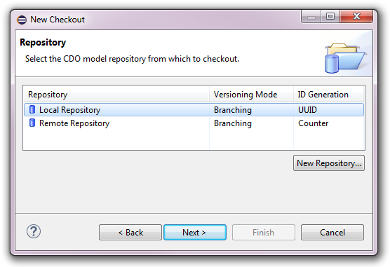
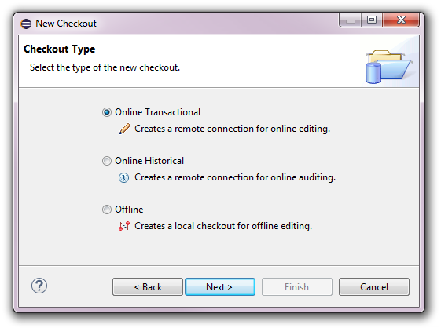
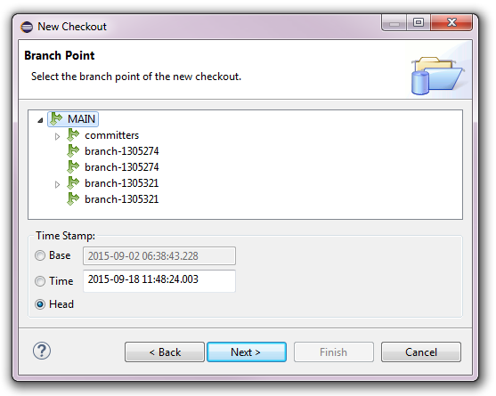
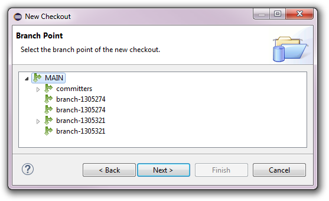
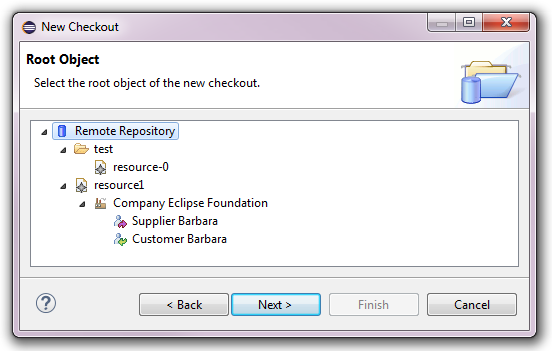
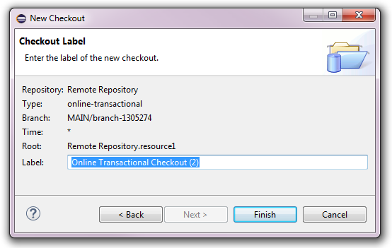

Checking Out from Repositories


Checking Out from Repositories |
|
To be able to work with the models in a CDO repository they need to be checked out from that repository. A checkout represents a named combination of the following pieces of information:
branch point that determines from what branch and from
what time the models of the checkout are shown, and
root resource of the repository.
The most obvious way to start the checkout process is to select a repository or branch in the CDO Repositories View, open the context menu and select the Checkout action or the Checkout As action. Other ways are explained in CDO Checkout Wizard, Duplicating Checkouts, and History Integration.
The Checkout action involves no further dialog interaction, but immediately creates a transactional checkout with default values for all settings. The following sections describe the different checkout wizard pages in detail.
Table of Contents
The first page of the checkout wizard shows the list of the repositories that are configured in the current workspace. The New Repository button opens the repository wizard that is explained in Creating Repositories and Connections.

Note that this first wizard page is automatically skipped if the workbench selection implied a specific repository at the time the wizard was opened, such as a repository or branch being selected in the CDO Repositories View. In this case the Back button goes back to the repository selection page and allows to change the original selection.
After selecting or creating the repository to check out from pressing the Next button or double-clicking the selected repository advances to Selecting the Checkout Type.
The second page of the checkout wizard allows to select the type of the checkout to create:

After selecting the desired checkout type pressing the Next button or double-clicking the selected checkout type advances to Selecting the Branch Point.
The following sections describe the different types of checkouts and under what conditions they are avilable.
An online transactional checkout is based on an online transaction to a repository and supports
the modification of the repository's resource tree and model elements in the Project Explorer,
as well as the modification of model resources in the supported model editors. This type of checkout always operates
on the floating head of the configured branch and displays the changes that other users commit
to that branch in real-time.
Online transactional checkouts can be created for any type of repository. The term "online" reflects the fact that this type of checkout requires a connected repository. Online checkouts do not store model state locally in any form. If the associated repository is disconnected the online checkout is closed, as well.
This is the default checkout type that provides CDO's unprecedented real-time model collaboration functionality.
See Also:
An online historical checkout is based on an online view to a repository and supports
the auditing of the repository's resource tree and model elements via the CDO Time Machine View.
This type of checkout always operates on the configured time stamp of the configured branch. As the historical state of
the models at that time stamp is immutable the changes that other users commit
to that branch are not displayed.
Online historical checkouts can only be created for repositories with the versioning modes auditing or branching. The term "online" reflects the fact that this type of checkout requires a connected repository. Online checkouts do not store model state locally in any form. If the associated repository is disconnected the online checkout is closed, as well.
This is the checkout type that provides CDO's unprecedented real-time time travel functionality.
See Also:
An offline checkout is based on a transaction on the local replication of a repository and supports
the modification of the repository's resource tree and model elements in the Project Explorer,
as well as the modification of model resources in the supported model editors.
This type of checkout always operates on the floating head of the configured branch.
The changes that other users commit to that branch are not displayed until an update operation is performed.
Offline checkouts can only be created for repositories with the ID generation option UUIDs. The term "offline" reflects the fact that this type of checkout does not require a connected repository. Offline checkouts replicate the model state into a local database. If the associated repository is disconnected the offline checkout stays fully functional (except for operations such as Checkin or Update, which require an active repository connection).
This is the checkout type that provides CDO's unprecedented offline modeling functionality.
See Also:
A repository may contain the states of models and model elements from many different branches and time stamps. The third page of the checkout wizard allows to select the branch point of the checkout to create:

For transactional checkouts the time stamp is implied to be the head
of the selected branch, so the wizard page is reduced to:

After selecting the desired branch and optionally the desired time stamp pressing the Next button or double-clicking the selected branch advances to Selecting the Root Object.
See Also:
CDO does not support the concept of partial checkouts, i.e., all actions will always operate on all models and model elements in the
repository. But by selecting a root object different from the root resource of the repository
the folders, resources, and model elements displayed under the checkout in the Project Explorer
can be limited to the children of this root object. Visually the checkout node is equivalent to the selected root object:

After selecting the desired root object pressing the Next button or double-clicking the selected root object advances to Naming the Checkout.
The fifth and last page of the checkout allows to review the choices of the previous pages and to change the proposed name/label of the checkout to create:

Pressing the Finish button will close the wizard and create the new checkout as specified.
See Also: